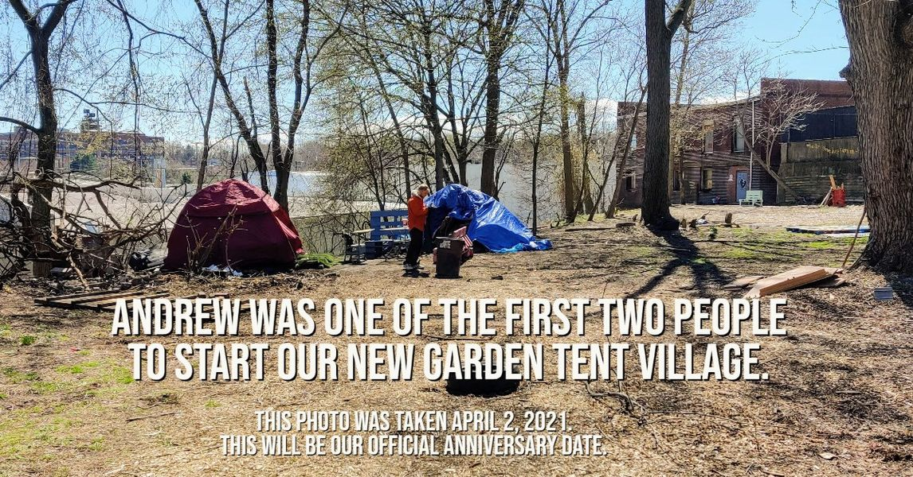

Timeline photos
This photo was taken on April 2, 2021.
That's just over a year ago.
That means that our Garden Tent Village has been up and running for 1 full year. Our first village ran for 2 full years. So we'll see if we can beat that record until the City of Akron shuts us down again.
Homelessness in America is a humanitarian disaster. If we treated prisoners of war the way we treat our own citizens we would be facing international crimes against humanity.
I. WILL. NOT. STOP.
Until every American has a place to safely sleep in their own country, I WILL NOT STOP.
The man standing there is Andrew. He was one of the people who never got housed by January 2019 after the city forced us to close. He moved into the woods that day and has been homeless ever since. That's abhorrently wrong.
Today, Andrew lives in one of our 2 tiny houses. He has electricity and access to our Internet and indoor toilet and shower. I would not say he would say he's happy with his living situation. (He's always wanted an apartment.) But he's doing OK. And I love having him around.
I'm not sure who lived in the second tent. Was it Rob? I'll have to go find out.